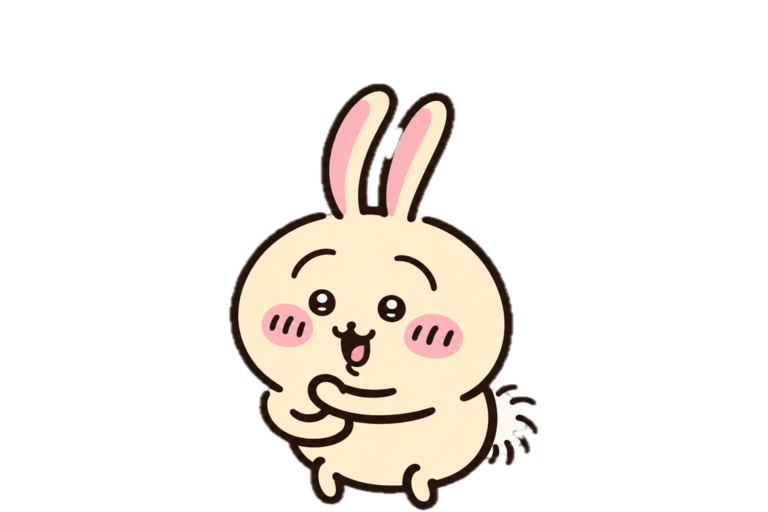

Rescoop server + FE
rescoop-server last_inbound_at 컬럼 신설 및 기준 변경
STEPS
last_inbound_at 필드와 migration 정의
수신 기준 변경 지점 목록화
테스트 케이스와 롤백 메모 추가
NOTES
에이전트가 제안한 변경은 제목/상태를 건드리지 않고 이 Todo의 맥락에만 남겨둔다.
오늘 오전 세션에서 기준 컬럼을 먼저 확인하기.
HISTORY
아직 할 일이 없어요
이 버블에서 바로 하나 적어볼까요?
저장소에 연결할 수 없어요
아직 변경을 저장하지 않았습니다.
Cofoco를 다시 열어 재시도하세요.
ProjectsRescoop server + FE · 2 folders
IntegrationsCodex CLI · Personal access off
Custom pet투명 PNG/WebP · 같은 캔버스와 기준선
서기 · 2장눈 뜸 / 중립적으로 눈 감기알림 · 팔 돌리기 3장짧은 팔 교차 / 고개 앞·뒤·앞진행 · 춤추기 3장A 중립 / 같은 왼손을 뻗은 B·C 몸통 쏠림눕기 · 2장내쉬기 / 몸통이 살짝 들리는 들이쉬기
AppearanceFollow system · Reduce motion respected
NotificationsChange bubbles on · OS notification optional
